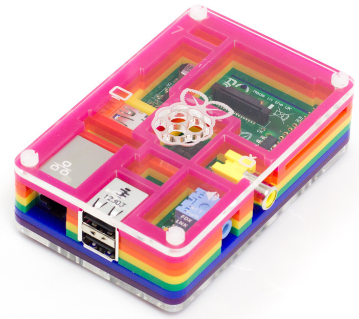
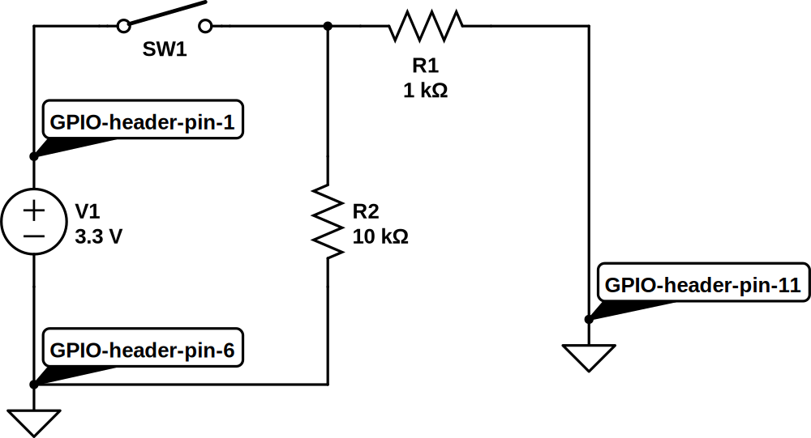
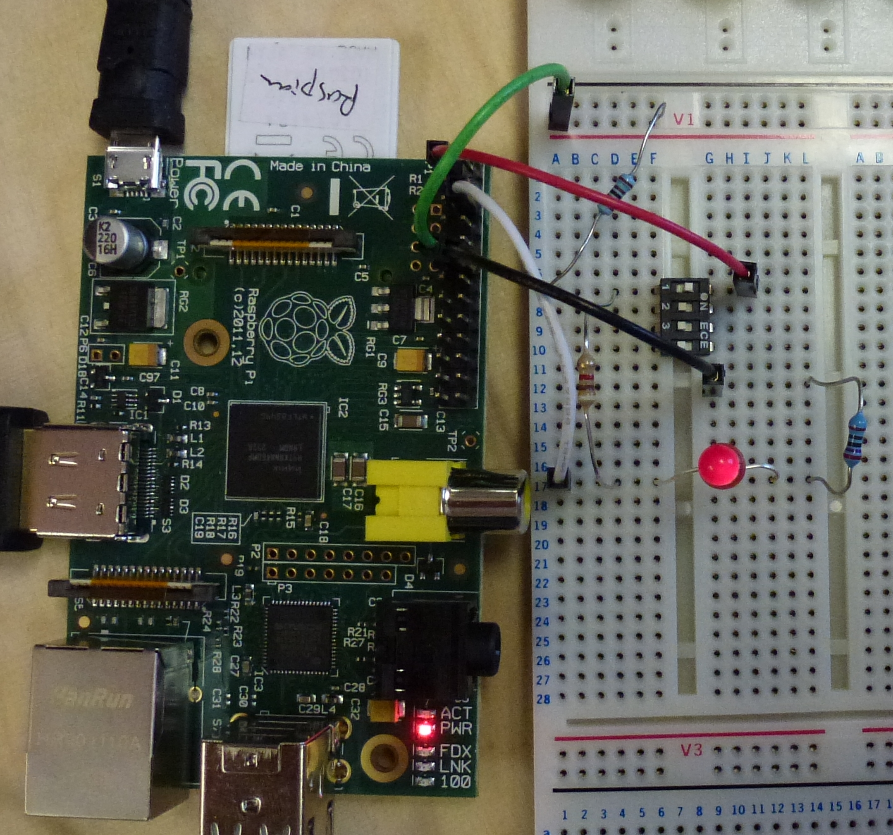

Pretty much the simplest thing we can do with the Pi's GPIO header is to light up an LED1 — let's make this our Hello World!2. (If you've not done this type of thing before, please read this warning first.)
Materials used:
To create a Hello World! lighting circuit we only need two electronic components, an LED to light up and a resistor to prevent more current flowing through the LED than it can handle.3 Here's the circuit diagram4:
Here D1 is the LED we're lighting up and R1 is a resistor that prevents too much current flowing in the circuit. V1 represents the 3.3 volt power supply that the Pi makes available, with +ve on GPIO pin 1 and ground on pin 6. Note that I'm using the physical header pin numbers here as these are the easiest numbers to quickly match up to the Pi circuit board (just count left to right and top to bottom). There are several other ways to refer to the pins, however, and several gotchas along the way — for more detail see the discussion on GPIO pins below).
If we transfer this design onto our breadboard, we end up with something
looking like this:
So far, so boring: this is pretty much the equivalent of connecting a torch bulb to a battery and going "ahhh" at the pretty light. More interesting, especially in the context of our earlier discussion on general purpose devices and interaction electronics, is to drive the LED by software; to do this all we need to do physically is connect the circuit to a different pin on the GPIO header, in this case pin 11. Now spot the difference:

Note the shift from pin 1 to pin 11 on the GPIO header. That's all! Now we're almost ready to start turning the LED on and off using software running on the Pi, but first we need to take a detour into the murky world of GPIO pin numbering. (If you're lucky enough to have your Mum nearby you may want to ask her to hold your hand while reading the next section. If it ends in tears don't say I didn't warn you.)
I think if I went on a course in Egyptian hieroglyphics for a month and then revised my obfuscated C notes for a while I could probably come up with a numbering scheme for the GPIO pins which was perhaps half as confusing as the existing one. Actually that's a little unfair, but the problem is that there are four separate ways to refer to the pins, all different, all useful. To begin with, there are two offical numbering schemes, one relating to the physical header on the Pi circuit board that we actually make connections to (numbered 1 to 26), and the other relating to where they interface to the Broadcom system on a chip at the heart of the beast (the BCM2835). Then there's also a name for the function of the pin (e.g. 'GPIO 0'), and an extra complication is that a couple of pins changed function in the 'revision 2' version of the Pi. Finally, the way that we access the pins through software also has its own nomenclature, and, because some of that software generalises across multiple devices (e.g. the Pi and the Arduino) again the numbering is completely different.
I think I'd need to add runes and Clingon symbols to the mix if I was really trying to challenge the supremacy of the confusion that can result here.
Luckily there are a number of good sources to turn to for help. My favourite
is from Gordon Henderson, creator of Wiring Pi, an
excellent software library for talking to the Pi (and several other boards). I
recommend printing out Gordon's key to the GPIO
pins and keeping it handy at all times. I also strongly recommend working
on the Pi with the pins positionned in the top right corner, not the other way
around, so that the numbers on the diagram match up with the orientation of
the Pi. So do not do the following if you value your sanity (assuming you
still have some left, that is5):

The Pi's GPIO facilities cover a lot of other useful functions that we've not
even hinted at so far. Consult one of the Pi books for details,
or see this nice summary one-pager from
Pimoroni, makers of the fabulously cute PiBow case —

— and home of the
Pi logo's creator, Paul
Beech6.
Now we're ready to write some software to control the interaction electronics that we're connecting to the Pi.
Although the Linux operating system running on your Pi provides access to the GPIO pins at a low level via the sysfs virtual file system, it is generally easier to use a higher level library that abstracts a little further away from the underlying hardware. Such libraries exist for (at least) Perl, Unix shell script, Python, Scratch and Java. We'll use the WiringPi library from Gordon Henderson, which makes available the same abstractions for various devices and is a well tested and robust piece of kit. (Thanks Gordon!)
WiringPi provides a convenient command-line program called gpio that we can use to control and read from the GPIO pins, and we'll use this in our examples. This means that we're going to be programming in Unix shell script, which is the command language that the Pi's Raspbian Linux operating system drops you into by default when you log in. This language can be used from the command prompt (the $ or # that appears on screen to prompt you to make an input) and can also be collected into a file and used as a command (or script) in itself. This makes it the most direct way to experiment with Pi programming (not to mention controlling many types of computer), and is well worth learning, even if you're also learning a higher level language like Scratch, Java or Python.
GPIO pins either listen for a signal (in input mode) or produce a signal (in
output mode). Our first job when programming GPIO interaction code, then, is
to decide which mode the pins we're working with should be in, and ask
WiringPi to set them up accordingly. Refering back to our circuit diagram,
we see that header pin 11 is what we're using to drive the LED — i.e. make an
output — and that therefore we need to set pin 11 into output mode. For
reasons discussed above header pin 11 is known to WiringPi as
GPIO 0, so we use the gpio utility to set the mode for that pin like this:
gpio mode 0 out
We can read this as "call the gpio program to set the mode of pin 0 to output". (We don't need to do anything with pin 6, as this is always connected to ground and doesn't have a mode setting.) Next, let's turn our output pin on and see our LED light up:
gpio write 0 1
Again we're operating on pin 0, this time setting it high (to 3.3 volts — see next section). And now turn it off again (to 0 volts):
gpio write 0 0
Magic!
For our next trick, let's get our Pi to sense something in the outside world, and respond to that input by again turning the LED on and off.
Let's recap where we've got to. First we hooked up an LED and a resistor to the Pi's 3.3v supply, then moved it onto one of the GPIO pins and discovered how to switch it on and off via software. Now let's look at an example of the other side of the interaction coin, reading from a sensor. To get us started we'll use a switch as a sensor, and get our Pi software to respond to the position of the switch.
There are several example circuits for this type of thing knocking around; our starting point below is adapted from an Embedded Linux tutorial. Another good source (though using Python instead of shell script) is this physical computing tutorial from the Cambridge University lab where the Pi originated.
To make things a little more interesting we'll combine the data we get from the switch with the LED control circuit we developed above. In each case we're using the Pi's native logic voltage of 3.3 volts to signify binary 1 and using 0 volts to signify binary 0. (We can think of these as "on" and "off", or "high" and "low", or even "true" and "false", depending on what sort of mood we're in.) We'll read either a 0 or a 1 from our circuit depending on whether the switch is either open or closed respectively.
First here's the circuit to read the position of a switch7:

We connect the switch SW1 to the (always on) 3.3v supply (header pin 1), so
that when the switch is in the on position it will supply the logical high
value. Resistor R1 prevents mishaps if we accidentally set header pin 11 to
output at low (i.e. try to get the poor thing to pull the 3.3v supply to 0v,
with unhappy consequences). Then we use a pull down resistor, R2, to drag
pin 11 low when the switch is open. When the switch is closed, R2 being much
higher than R1 implies that pin 11 will be pulled high by the 3.3v supply from
pin 1.
Confused? There's more explanation in the Embedded Linux tutorial linked above, and a much more detailed presentation at AdaFruit. (The latter is in relation to the Arduino but the principles are the same.)
The breadboard to implement this circuit looks like this:

All we need now is some code to test what position the switch is in. We're sensing on header pin 11, which is WiringPi's 0, so we set 0 to input mode:
gpio mode 0 in
Now we can read the value like this:
gpio read 0
When the switch is on this will return a 1, and when it is off a 0. We're on a roll!8
We've nearly completed our lightening tour of the basics of interaction electronics with the Pi's GPIO facility. To finish off we'll connect up the sensing and responding sides of the picture. Here's a circuit which combines sensing from a switch with turning an LED on and off via software. The result is that we will now both sense from the switch and respond to the sensor data from software.

Nothing new here — we've just combined with LED driver circuit that we began with and the switch reader circuit that in the previous section. Here we have the switch sensor to the left and the LED driver to the right.
The breadboard to implement this circuit looks like this:


We've use a four-way switch (in "dual in line" or DIL pin style) because we
had one handy and because it was easy to connect to the breadboard, but we're
only using one of its channels — the equivalent of an SPST or "single pole
single throw" switch.
The code to drive this uses some neat features of Unix shell script:
gpio mode 0 in gpio mode 1 out while : do gpio write 1 `gpio read 0` sleep 1 done
The while : loop repeats forever (in shell ":" is a no-op command which always returns true, so the loop never hits a termination condition). We do this so that the program keeps testing to see if the switch position has changed. We don't really need to do this every few milliseconds, so to make the resultant load on the machine a little lower we use sleep to pause the program and set a wakeup timer in the operating system. The value of "1" passed to sleep means "one second", so our loop will run once per second, or thereabouts.9
The forward quotes (or backticks) in gpio write 1 `gpio read 0` do "command substitution": they run the command contained between the two quotes and replace the command with whatever is returned, then running the enclosing command. Here we're saying "read a value from GPIO 0" and then "write that value to GPIO 1". When the switch is on GPIO 0 will read high (and the command will return 1), at which point we'll write 1 to GPIO 1, our output pin which is driving the LED (so the LED will turn on). If the switch is off, then GPIO 0 will read low, returning 0 which will then be written to the output pin and turn the LED off.
So we've now written a program on the Pi that is both sensing from the outside world (the position of the switch) and sending out a response (lighting or extinguishing the LED). We've taken our first steps in interaction electronics; now its time to look at a couple of simple projects that we can build using the techniques that we've learned so far.